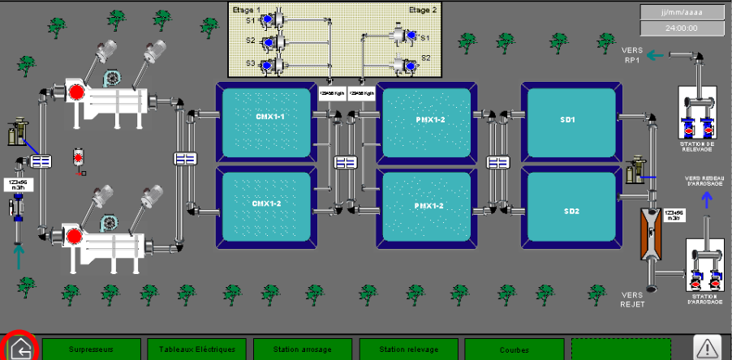
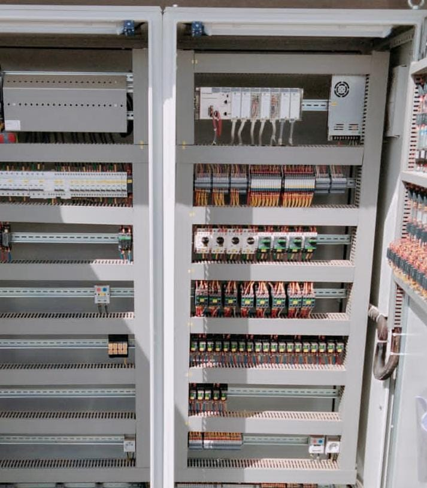
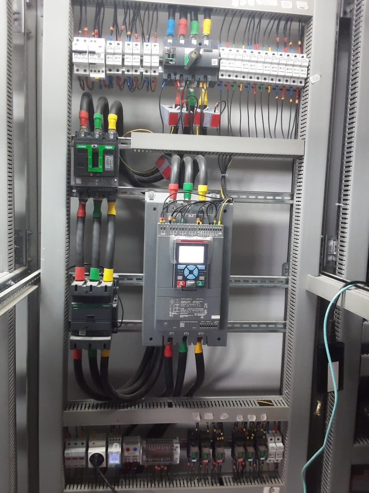
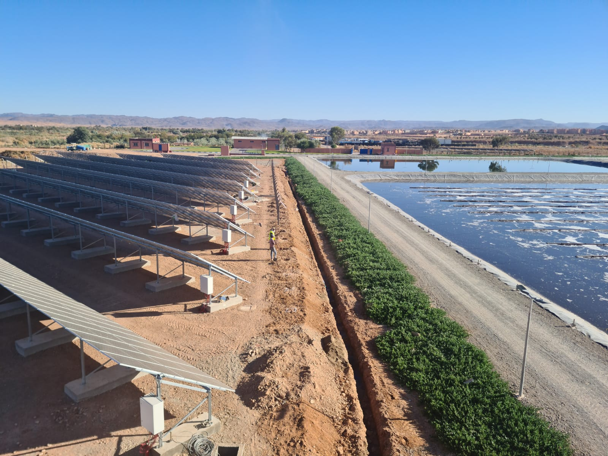
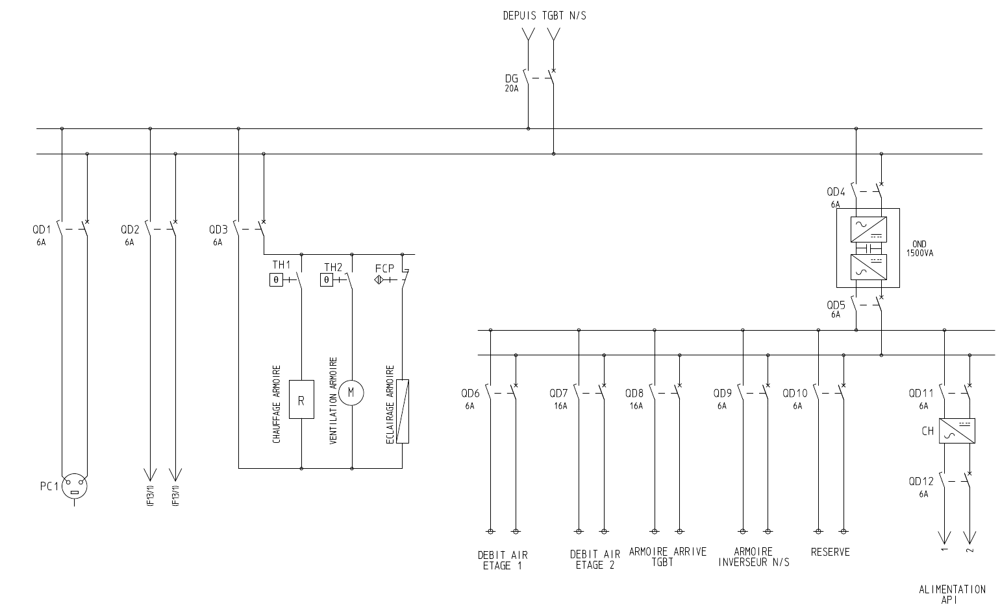
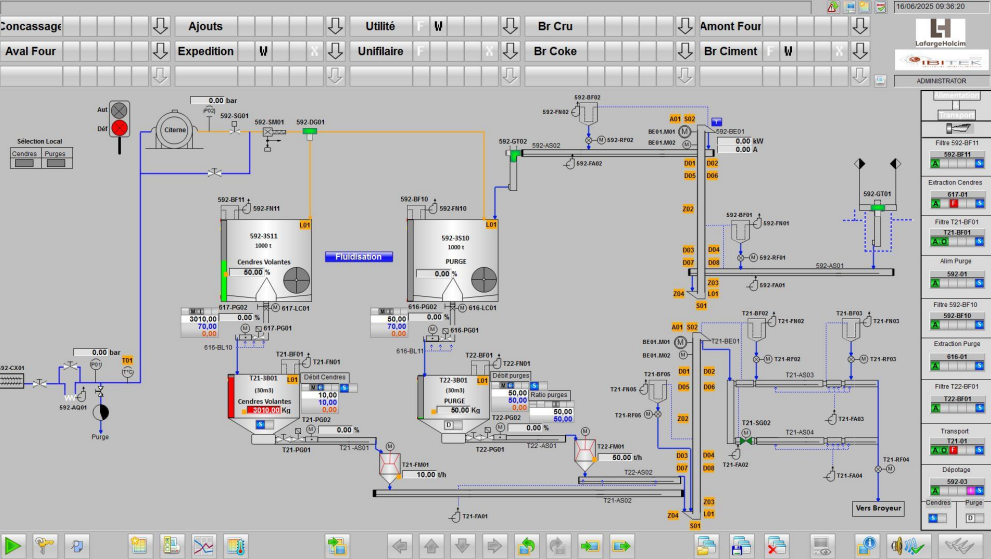

Project / automation
Wastewater treatment systems
Electrical engineering, control and supervision for a wastewater treatment installation.

Treatment-process overview — Ouarzazate.
Project objective
Connect the electrical distribution, process equipment and operator supervision within a treatment installation.
Engineering work
- Electrical studies and power/control drawings.
- PLC programming and supervision work for process equipment.
- Functional testing, fault diagnosis and commissioning.
Deliverable
An engineering scope covering drawings, electrical panels, process interfaces and on-site testing.
Technical gallery
Inside the project.
Select an image to inspect the drawings, interfaces and equipment.








Site media
Motor-room site walkthrough.
Continue exploring
Related work.

Project03
Remote supervision of six stations
Centralised exchange of operating data and commands between a central station and five remote stations.
Explore project
Project04
Cement mill control
PLC control development for a cement mill, presented alongside cement-process supervision views.
Explore project